Slide 01 · 12s
2026 年最新 TTS 與 AI Voice Clone 技術研究
我們如何讓 Snowy HyperFrames 的 AI 旁白更自然、更像真人？
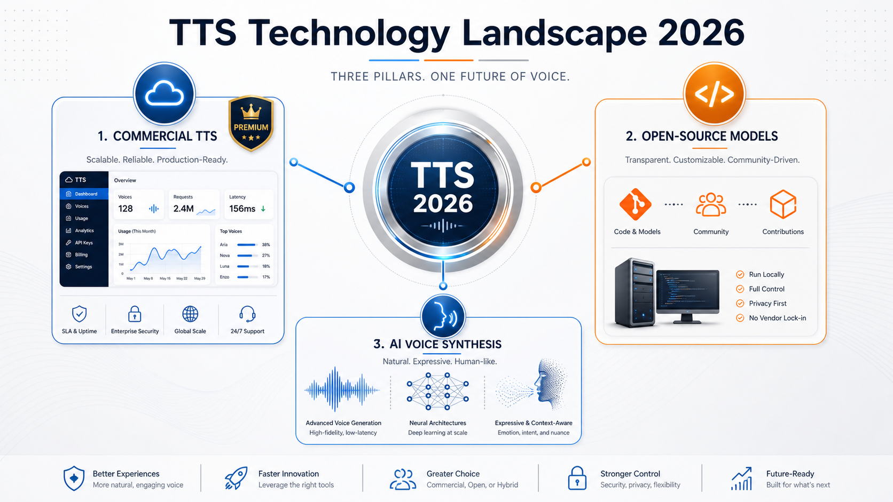
2026 年最新 TTS 與 AI Voice Clone 技術研究
Slide 02 · 15s
現狀：Snowy Narration 的挑戰
目前 Snowy HyperFrames 使用 Edge-TTS • 免費、本機、無 API key • 支持台灣普通話多種聲音 • 局限：自訂 SSML 已移除，無法精細韻律控制 • 問題：英文技術詞、產品名在繁中混讀時不自然
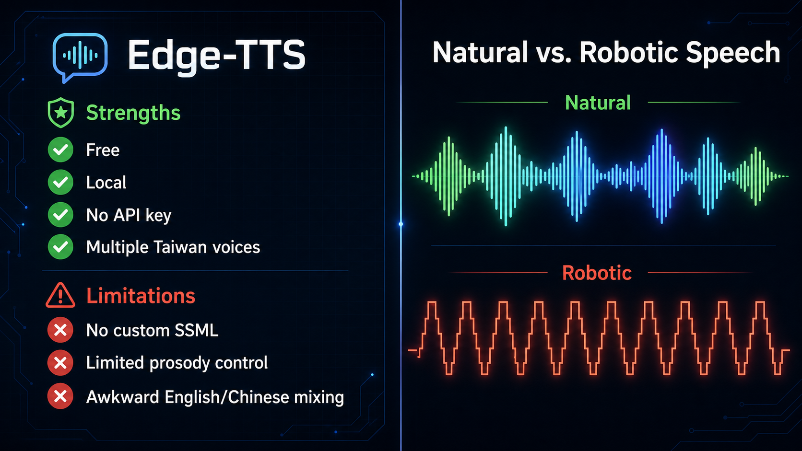
現狀：Snowy Narration 的挑戰
Slide 03 · 18s
商用高端方案：品質優先
2026 年商用 TTS 領導者 ElevenLabs Multilingual v2 (70+ 語言) • 中文混英文最自然 • 成本：$30-120 per 1M chars • 支持聲音複製、情感表達 Inworld TTS ($5-10/1M) • 盲測勝 ElevenLabs 60% • 低延遲、免費聲音複製 OpenAI Realtime-2（對話優先） • 實時翻譯、推理邊聽邊做 • 高成本 ($32/1M input + $64/1M output)
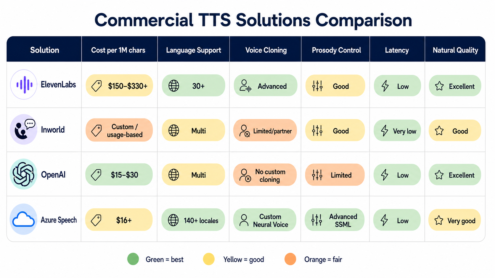
商用高端方案：品質優先
Slide 04 · 18s
開源高效方案：零成本本機
2026 年頂級開源 TTS Kokoro-82M（最輕量） • 只有 82M 參數，CPU 可運行 • Apache 2.0，完全開源 • 38+ 語言，自然發音 Fish Speech 1.5（中英混讀冠軍） • ELO 1339，TTS Arena 頂級 • 支持中文混英文 • CC-BY-NC 許可（非商用須另議） F5-TTS（流匹配架構） • 零樣本聲音複製（5-15 秒） • MIT 推理代碼許可 • RTX 4090 上 300-500ms 延遲 CosyVoice 2.0 / Mel...
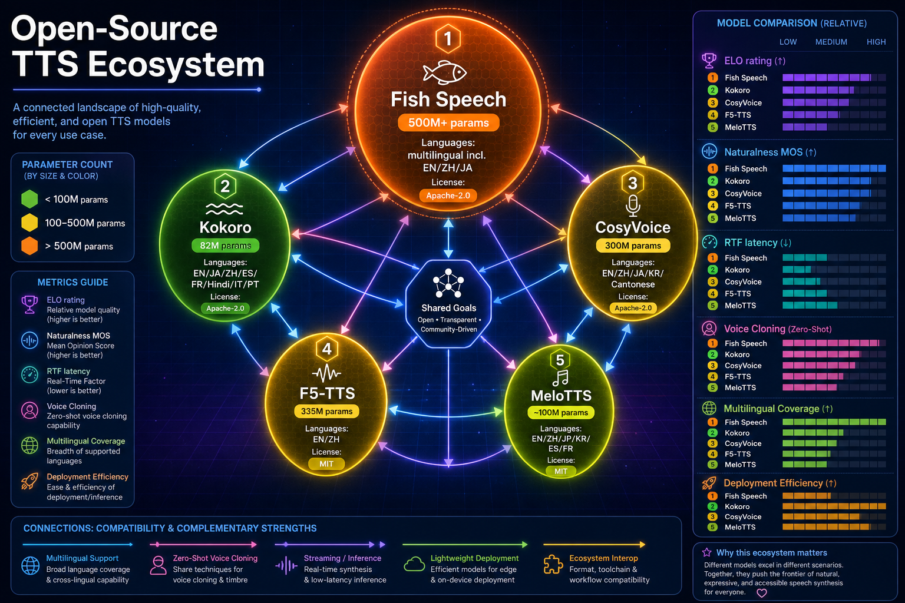
開源高效方案：零成本本機
Slide 05 · 15s
聲音複製的法律邊界
Voice Cloning 2026 合法框架 ✓ 合法（清晰授權） • 複製自己的聲音（任何用途） • 員工/承包商聲音（明確書面同意 + 許可） • 公眾人物（明確合約 + 補償框架） ✗ 違法（無同意） • 複製他人聲音無同意 • 用於詐騙、冒充 • 隱含同意無法保護 📋 最佳實踐 • 明確書面同意（指明用途、期限、地域） • AI 生成標籤（EU/中國/多州要求） • 商用授權清楚（ElevenLabs / 平台檢查） • 可撤銷條款（尊重原聲者權利）
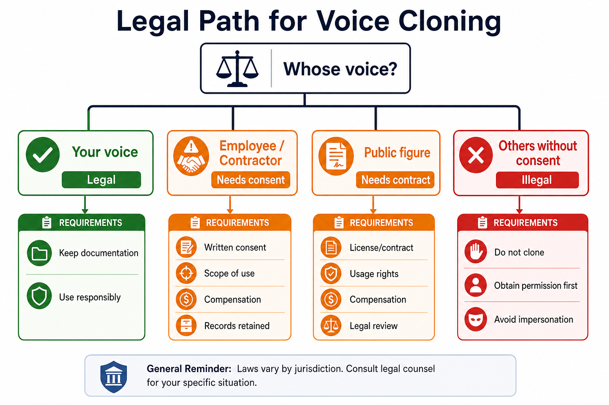
聲音複製的法律邊界
Slide 06 · 20s
Pronunciation Map 與韻律控制策略
讓 TTS 朗讀更自然的技術手段 1. Pronunciation Map（發音替換） GPT → G P T OpenAI → Open A I ChatGPT → Chat G P T API → A P I Free/Plus/Pro → 免費版/Plus 版/Pro 版 2. SSML 韻律標籤（Azure / 商用方案） <prosody rate="-10%" pitch="+5%"> <break time="300ms"/> <phoneme...
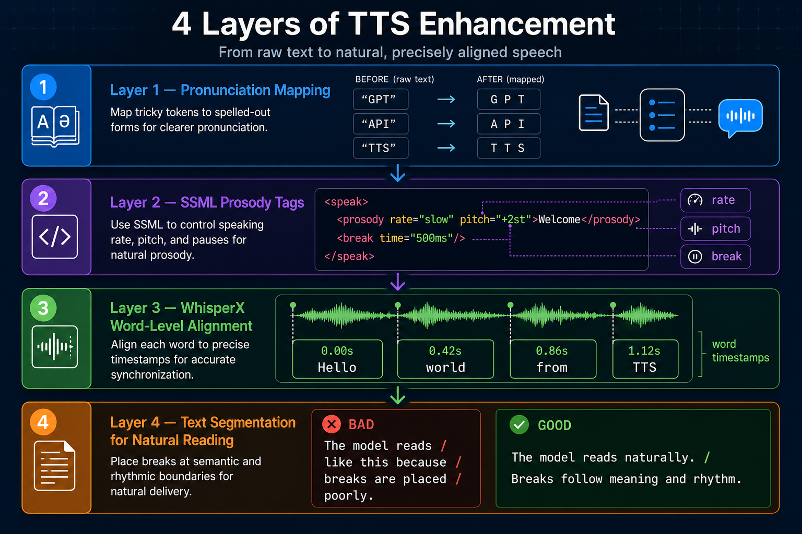
Pronunciation Map 與韻律控制策略
Slide 07 · 18s
Snowy Narration Pipeline 短中長期建議
如何升級 Snowy 旁白系統 短期（現在 - 1 個月） ✓ 保留 Edge-TTS + pronunciation map ✓ 錄製 A/B 測試樣本 ✓ 評估 ElevenLabs Turbo、Azure Speech ✓ 建立發音替換規則庫 中期（1-3 個月） ✓ 若預算允許，切換至 Inworld / ElevenLabs Turbo ✓ 自動化 pronunciation map 應用 ✓ 整合 WhisperX 強制對齐字幕生成 ✓ 建立 TTS 品質 QA 流程 長期（3-6 個月） ...
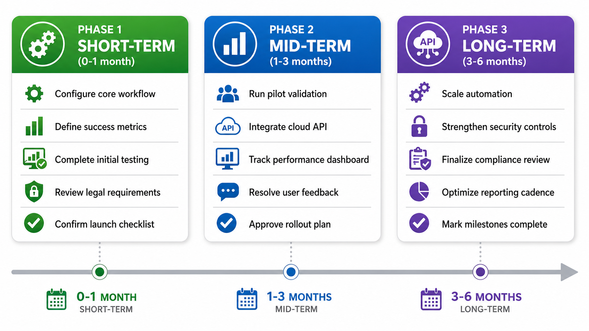
Snowy Narration Pipeline 短中長期建議
Slide 08 · 15s
TTS 方案成本與品質的權衡
成本 vs 品質矩陣 高品質 - 高成本 ElevenLabs / Inworld / OpenAI Realtime → 最自然、情感豐富、語言多 → 企業應用、商業影片最佳 中等品質 - 中等成本 Azure Speech / Google Cloud TTS → SSML 精細控制、可靠 → 定製化需求、可控發音 高品質 - 零成本（本機） Kokoro / Fish Speech 1.5 / F5-TTS → 免費、無延遲、隱私保護 → 開源社區、企業自建方案 → 自然度快速進步（2026 已媲...
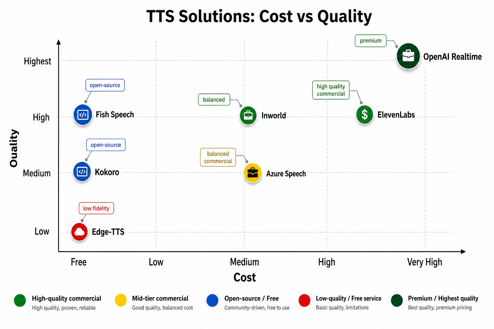
TTS 方案成本與品質的權衡
Slide 09 · 12s
WhisperX 強制對齐的價值
為影片旁白自動對齐字幕 WhisperX 的三大能力 ✓ 詞級時間戳：±50ms（vs Whisper ±500ms） ✓ 說話者分段：多說話者自動標籤 ✓ 批量推理：RTX 4090 達 70× 實時速度 應用到 Snowy 生成 SRT 字幕精準對齐到 TTS 音頻 支持多說話者分段（訪談、對話內容） 自動化字幕生成流程，減少手工編輯 改進字幕與影片視覺內容的同步 成本：零（開源 BSD-2-Clause 許可） 資源：需要 HuggingFace 令牌接受 pyannote 條款 下一步...
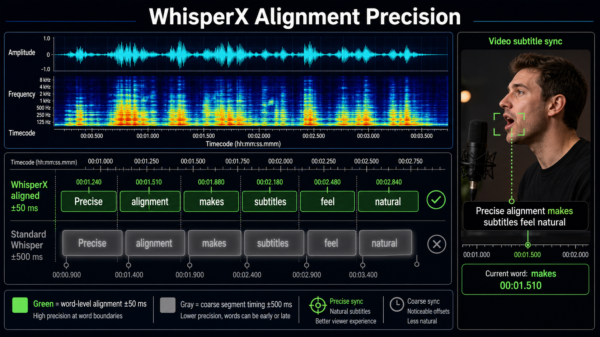
WhisperX 強制對齐的價值
Slide 10 · 15s
Snowy 團隊的決策清單
立即行動項目 【本周】 □ 評估 Edge-TTS 當前的 3 個聲音（HsiaoYu / HsiaoChen / YunJhe） □ 錄製 10-20 秒技術詞混讀的測試樣本 □ 用 ElevenLabs / Azure / Inworld 試讀 【本月】 □ 建立 pronunciation map 規則庫（API / GPT / TTS 等高頻詞） □ 自動化 .display.txt → .tts.txt 生成 □ 試驗 WhisperX 在一個完成影片上的效果 【下月】 □ 評估成本：0 (E...
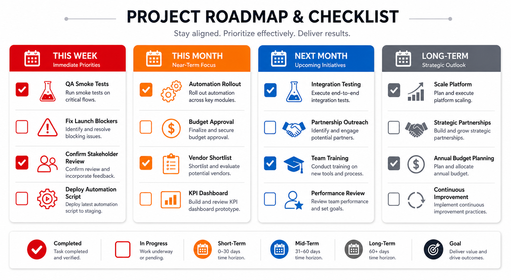
Snowy 團隊的決策清單
Slide 11 · 10s
結論：從快速迭代到長期自動化
三個核心洞察 1️⃣ 最好的 TTS 取決於優先次序 時間優先 → Edge-TTS 品質優先 → ElevenLabs / Inworld 成本優先 → Kokoro / Fish Speech 2️⃣ Pronunciation map + WhisperX 是低掛果實 立即提升旁白品質 零成本、開源、可自動化 建立基礎設施，為未來擴展做準備 3️⃣ 聲音複製須先明確授權框架 法律風險明確可控 與旁白演員的合約須清楚 未來可持續發展 下一步 執...
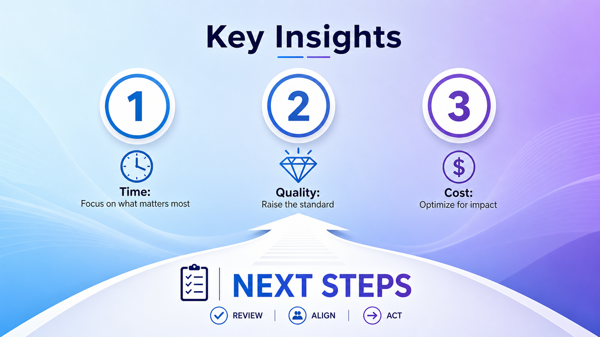
結論：從快速迭代到長期自動化